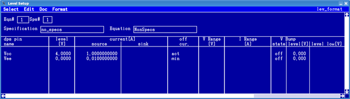
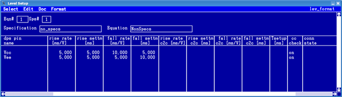

DPS pins with voltage ramps
Similar to the connect setup time, the ramp setup times are the delay from the ramp start point to a common ramp reference time point. A connect, disconnect, level, or set change sequence for several pins starts with the begin of the first ramp and ends after the last ramp; or the reference time point, whichever comes later.
You can also use negative values for the setup times. For details see DPS pins with connect setup time.
If a settling time is required between the end of the ramp and the next action, then the specified setup time must be the sum of this settling time and the length of the ramp, because the setup times are referenced to the start of the ramp.
If the voltage change occurs, because the active DPS set is changed, then the ramp parameters are taken from the new set. If the primary DPS set is changed by an SPRM (Set PRiMary sets) command before a disconnect, then the ramp parameters for the disconnect are also taken from the new set, even if this set was not enabled before.
The figure below shows the voltage ramp setting in the Level Setup Tool.


To see the voltage ramp specific columns in the second figure you may need to scroll to the right. For a description of the columns in first figure see How to read the DPS Setup window.
- rise rate: The inverse slew rate for the rising edge in ms/V for connect and disconnect cases.
- rise settm: The settling time for the rising edge in milliseconds [ms] for connect and disconnect cases.
- fall rate: The inverse slew rate for the falling edge in ms/V for connect and disconnect cases.
- fall settm: The settling time for the falling edge in milliseconds [ms] for connect and disconnect cases.
- rise rate c2c: The inverse slew rate for the rising edge in ms/V for "connect-to-connect" cases.
- rise settm c2c: The settling time for the rising edge in milliseconds [ms] for "connect-to-connect" cases.
- fall rate c2c: The inverse slew rate for the falling edge in ms/V for "connect-to-connect" cases.
- fall settm c2c: The settling time for the falling edge in milliseconds [ms] for "connect-to-connect" cases.
- Tsetup: The connect setup time (from the connect of a pin to a common connect reference time point) for rising and falling edges in milliseconds [ms]. Cannot be used with the other parameters above.
The above "connect-to-connect-" cases (see ... c2c parameters) are level changes caused by a reprogramming of the output voltage within one DPS set, or by switching to another DPS set while the DPS is connected.
Further details on the DPS settings can be found in DPSPINS resources and Setting up the Device Power Supply. Graphical illustrations of the slew rate and settling time parameters can be found in Voltage ramps and Voltage ramp example.
Mixing pins with 'connect setup time' and pins with 'voltage ramps'
When mixing pins, the order of execution depends on the type of operation.
- Connect:
- First all non-ramp pins are connected using the defined connect setup times, then the ramp pins are connected using the defined ramp parameters.
- Disconnect:
- First the ramp pins are disconnected using the defined ramp parameters, then the non-ramp pins are disconnected in the reverse order specified by the connect setup times.
- Voltage change during connect:
- First the voltage of all non-ramp pins is changed, then the voltage of the ramp pins is changed using the defined ramp parameters.
Functional changes
- Introduced in SmarTest 7.1.0